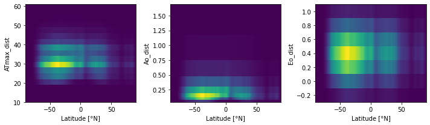
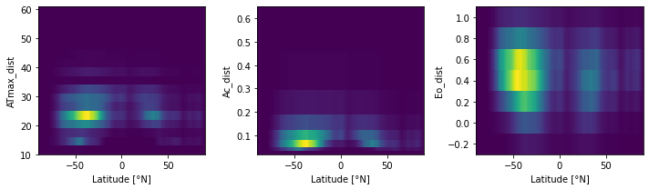

Defining the Aerobic Safety Margin
Contents
Defining the Aerobic Safety Margin¶
%load_ext autoreload
%autoreload 2
The autoreload extension is already loaded. To reload it, use:
%reload_ext autoreload
from itertools import product
import intake
import matplotlib.pyplot as plt
import metabolic as mi
import numpy as np
import thermodyn
import util
import xarray as xr
Load World Ocean Atlas data¶
Access intake catalog for remote data.
catalog = intake.open_catalog("data/catalogs/woa2018-catalog.yml")
catalog
woa2018-catalog:
args:
path: data/catalogs/woa2018-catalog.yml
description: World Ocean Atlas, v2018
driver: intake.catalog.local.YAMLFileCatalog
metadata: {}
Generate merged dataset¶
Loop over variables of interest; generate a combined dataset.
ds_list = []
variables = dict(
oxygen=dict(keep_vars=['o_an', 'depth_bnds']),
temperature=dict(keep_vars=['t_an']),
salinity=dict(keep_vars=['s_an']),
)
for variable, info in variables.items():
ds_list.append(
catalog[variable](time_code=0)
.to_dask()[info['keep_vars']]
.isel(time=0, drop=True)
.sel(depth=slice(0, 1000.0))
)
ds = xr.merge(ds_list)
depth = xr.full_like(ds.t_an, fill_value=1.0) * ds.depth
ds['pO2'] = thermodyn.compute_pO2(ds.o_an, ds.t_an, ds.s_an, depth, gravimetric_units=True)
ds['dz'] = ds.depth_bnds.diff('nbounds').squeeze()
ds['area'] = util.compute_grid_area(ds)
ds['volume'] = (ds.dz * ds.area).where(ds.t_an.notnull())
ds.volume.attrs['long_name'] = 'Volume'
ds.volume.attrs['units'] = 'm^3'
ds.lat.attrs['long_name'] = 'Latitude'
ds.lat.attrs['units'] = '°N'
ds = ds.compute()
ds
<xarray.Dataset>
Dimensions: (depth: 47, lat: 180, lon: 360, nbounds: 2)
Coordinates:
* lat (lat) float32 -89.5 -88.5 -87.5 -86.5 ... 86.5 87.5 88.5 89.5
* lon (lon) float32 -179.5 -178.5 -177.5 -176.5 ... 177.5 178.5 179.5
* depth (depth) float32 0.0 5.0 10.0 15.0 ... 850.0 900.0 950.0 1e+03
Dimensions without coordinates: nbounds
Data variables:
o_an (depth, lat, lon) float32 nan nan nan nan ... 303.3 303.3 303.3
depth_bnds (depth, nbounds) float32 0.0 2.5 2.5 ... 975.0 975.0 1.025e+03
t_an (depth, lat, lon) float32 nan nan nan ... -0.1925 -0.1925
s_an (depth, lat, lon) float32 nan nan nan nan ... 34.91 34.91 34.91
pO2 (depth, lat, lon) float32 nan nan nan nan ... 21.16 21.16 21.16
dz (depth) float32 2.5 5.0 5.0 5.0 5.0 ... 50.0 50.0 50.0 50.0 50.0
area (lat, lon) float64 1.079e+08 1.079e+08 ... 1.079e+08 1.079e+08
volume (depth, lat, lon) float64 nan nan nan ... 5.395e+09 5.395e+09
Attributes: (12/49)
Conventions: CF-1.6, ACDD-1.3
title: World Ocean Atlas 2018 : mole_concentrat...
summary: Climatological mean dissolved oxygen for...
references: Garcia, H. E., K. Weathers, C. R. Paver,...
institution: National Centers for Environmental Infor...
comment: global climatology as part of the World ...
... ...
publisher_email: NCEI.info@noaa.gov
nodc_template_version: NODC_NetCDF_Grid_Template_v2.0
license: These data are openly available to the p...
metadata_link: https://www.nodc.noaa.gov/OC5/woa18/
date_created: 2019-07-29
date_modified: 2019-07-29 Peak and verify¶
Make a few plots to ensure that every is as expected.
ds.dz.plot(y='depth', yincrease=False, marker='o');

ds.volume.sel(lon=179.5).plot(yincrease=False);

ds.pO2.sel(lon=179.5).plot(yincrease=False, vmax=25);

ds.pO2.sel(depth=0.0).plot();

ds.pO2.sel(depth=1000.0).plot();

ds.t_an.sel(lon=179.5).plot(yincrease=False);

ds.s_an.sel(lon=179.5).plot(yincrease=False);

Load trait space data¶
curator = util.curator_local_assets()
cat = curator.open_catalog()
ds_trait_space = cat['trait-space'].to_dask().load()
ds_trait_space.trait_spc_active.plot();

Volume of viable habitat in trait-space¶
dso_vol = xr.Dataset()
for v in ['trait_spc_active', 'trait_spc_resting']:
trait_space = ds_trait_space[v]
metabolic_baseline = trait_space.attrs['metabolic_baseline']
hypoxic_tol, temp_sens = trait_space.dims
vol = xr.full_like(trait_space, fill_value=0.0)
for i, A_parm in enumerate(trait_space[hypoxic_tol].values):
for j, Eo in enumerate(trait_space[temp_sens].values):
Phi = mi.Phi(ds.pO2, ds.t_an, Ac=A_parm, Eo=Eo, dEodT=mi.dEodT_bar)
viable_trait_mask = xr.where(Phi > 1, 1.0, 0.0)
vol[i, j] += (ds.volume * viable_trait_mask).sum(['depth', 'lat', 'lon'])
vol_percent = 100.0 * vol / ds.volume.sum()
vol_percent.attrs['long_name'] = 'Ocean volume'
vol_percent.attrs['units'] = '%'
vol *= 1e-6 # convert to 10^6 m^3
vol.attrs['units'] = '10$^6$ m$^3$'
name = f'vol_habitat_{metabolic_baseline}'
dso_vol[name] = vol
dso_vol[f'{name}_percent'] = vol_percent
dso_vol
<xarray.Dataset>
Dimensions: (Ac: 8, Eo: 7, Ao: 8)
Coordinates:
* Ac (Ac) float64 0.0258 0.0399 ... 0.3568 0.5528
* Eo (Eo) float64 -0.2 -0.0 0.2 0.4 0.6 0.8 1.0
* Ao (Ao) float64 0.0613 0.0962 ... 0.9114 1.429
Data variables:
vol_habitat_active (Ac, Eo) float64 0.0 0.0 ... 3.312e+11
vol_habitat_active_percent (Ac, Eo) float64 0.0 0.0 0.0 ... 98.19 98.48
vol_habitat_resting (Ao, Eo) float64 5.835e+10 ... 3.356e+11
vol_habitat_resting_percent (Ao, Eo) float64 17.35 18.38 ... 99.74 99.78dso_vol.vol_habitat_active.plot.contourf(levels=30);

dso_vol.vol_habitat_resting.plot.contourf(levels=30);

dso_vol.vol_habitat_active_percent.plot.contourf(levels=30);

plt.contourf(
dso_vol.vol_habitat_active_percent.Eo,
1 / dso_vol.vol_habitat_active_percent.Ac,
dso_vol.vol_habitat_active_percent,
levels=np.arange(0, 102.5, 2.5),
)
cb = plt.colorbar()
plt.xlabel(util.attrs_label(dso_vol.Eo.attrs))
inv_attrs = dict(**dso_vol.Ac.attrs)
inv_attrs['long_name'] = 'Inverse of hypoxic tolerance'
inv_attrs['units'] = 'kPa'
plt.ylabel(util.attrs_label(inv_attrs))
cb.ax.set_ylabel(util.attrs_label(vol_percent.attrs));

Examine trait frequency as a function of latitude¶
# construct an ATmax distribution with pre-defined bins
ATmax_bin_edge = np.arange(10, 64, 3)
ATmax_bin_c = np.vstack((ATmax_bin_edge[:-1], ATmax_bin_edge[1:])).mean(axis=0)
ATmax_bins = xr.DataArray(
ATmax_bin_c,
dims=('ATmax'),
coords={'ATmax': ATmax_bin_c},
)
lat_var = xr.full_like(ds.pO2.isel(lon=0, depth=0, drop=True), fill_value=0.0)
dsets = {}
for v in ['trait_spc_resting', 'trait_spc_active']:
# get trait space vars
trait_space = ds_trait_space[v]
metabolic_baseline = trait_space.attrs['metabolic_baseline']
ATmax = ds_trait_space[f'ATmax_{metabolic_baseline}']
hypoxic_tol, temp_sens = trait_space.dims
# initialize trait distributions
dso = xr.Dataset()
dso['ATmax_dist'] = ATmax_bins * lat_var
dso[f'{hypoxic_tol}_dist'] = trait_space[hypoxic_tol] * lat_var
dso[f'{temp_sens}_dist'] = trait_space[temp_sens] * lat_var
# loop over trait space and lat bands, sum trait frequency
for i, A_parm in enumerate(trait_space[hypoxic_tol].values):
for j, Eo in enumerate(trait_space[temp_sens].values):
if np.isnan(ATmax[i, j]):
continue
# compute metabolic index
Phi = mi.Phi(ds.pO2, ds.t_an, A_parm, Eo, dEodT=mi.dEodT_bar)
trait_wgt = xr.where(Phi > 1, trait_space[i, j], 0.0)
# loop over latitude and accumulate the frequency
ndx_bin = np.searchsorted(ATmax_bin_edge, ATmax[i, j], side='left')
for j_lat in range(ds.sizes['lat']):
freq_j = (trait_wgt.isel(lat=j_lat) * ds.volume.isel(lat=j_lat)).sum()
dso['ATmax_dist'][ndx_bin, j_lat] += freq_j
dso[f'{hypoxic_tol}_dist'][i, j_lat] += freq_j
dso[f'{temp_sens}_dist'][j, j_lat] += freq_j
# normalize so integral is 1.0
for key in dso.data_vars:
dso[key] /= dso[key].sum()
dsets[v] = dso
dsets
{'trait_spc_resting': <xarray.Dataset>
Dimensions: (ATmax: 17, lat: 180, Ao: 8, Eo: 7)
Coordinates:
* ATmax (ATmax) float64 11.5 14.5 17.5 20.5 23.5 ... 50.5 53.5 56.5 59.5
* lat (lat) float32 -89.5 -88.5 -87.5 -86.5 ... 86.5 87.5 88.5 89.5
* Ao (Ao) float64 0.0613 0.0962 0.1508 0.2364 ... 0.5813 0.9114 1.429
* Eo (Eo) float64 -0.2 -0.0 0.2 0.4 0.6 0.8 1.0
Data variables:
ATmax_dist (ATmax, lat) float64 0.0 0.0 0.0 ... 1.777e-08 5.922e-09
Ao_dist (Ao, lat) float64 0.0 0.0 0.0 ... 8.522e-07 5.115e-07 1.705e-07
Eo_dist (Eo, lat) float64 0.0 0.0 0.0 ... 1.989e-05 1.194e-05 3.98e-06,
'trait_spc_active': <xarray.Dataset>
Dimensions: (ATmax: 17, lat: 180, Ac: 8, Eo: 7)
Coordinates:
* ATmax (ATmax) float64 11.5 14.5 17.5 20.5 23.5 ... 50.5 53.5 56.5 59.5
* lat (lat) float32 -89.5 -88.5 -87.5 -86.5 ... 86.5 87.5 88.5 89.5
* Ac (Ac) float64 0.0258 0.0399 0.0619 ... 0.2303 0.3568 0.5528
* Eo (Eo) float64 -0.2 -0.0 0.2 0.4 0.6 0.8 1.0
Data variables:
ATmax_dist (ATmax, lat) float64 0.0 0.0 0.0 0.0 0.0 ... 0.0 0.0 0.0 0.0 0.0
Ac_dist (Ac, lat) float64 0.0 0.0 0.0 ... 5.784e-07 3.472e-07 1.157e-07
Eo_dist (Eo, lat) float64 0.0 0.0 0.0 ... 3.755e-05 2.254e-05 7.513e-06}
fig, axs = plt.subplots(1, 3, figsize=(10, 3), squeeze=False)
dso = dsets['trait_spc_resting']
for j, v in enumerate(['ATmax_dist', 'Ao_dist', 'Eo_dist']):
ax = axs[0, j]
coord = dso[v].dims[0]
ax.pcolormesh(dso[v].lat, dso[v][coord], dso[v])
ax.set_xlabel(util.attrs_label(dso.lat))
ax.set_ylabel(util.attrs_label(dso[v]))
plt.tight_layout();

fig, axs = plt.subplots(1, 3, figsize=(10, 3), squeeze=False)
dso = dsets['trait_spc_active']
for j, v in enumerate(['ATmax_dist', 'Ac_dist', 'Eo_dist']):
ax = axs[0, j]
coord = dso[v].dims[0]
ax.pcolormesh(dso[v].lat, dso[v][coord], dso[v])
ax.set_xlabel(util.attrs_label(dso.lat))
ax.set_ylabel(util.attrs_label(dso[v]))
plt.tight_layout();
